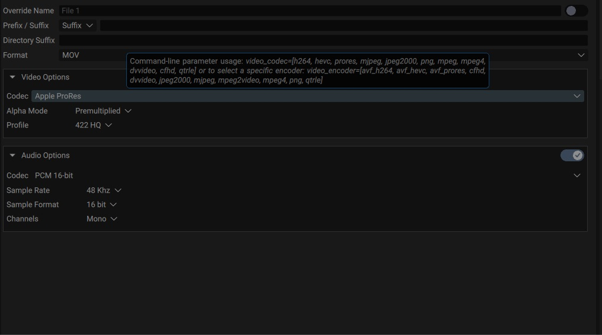

Creating Renders
To render a video/image sequence on disk, the main API to use is the RenderManager that can be accessed from Project.getRenderManager()
The RenderManager acts as a queue of CompRender and can start rendering them.
A CompRender defines a list of CompRenderInstance to render for a given Composition.
Each CompRenderInstance defines all parameters of a Composition to be rendered. The render instance contains a list of CompRenderFile.
Each CompRenderFile in the list will then take the output of the render and encode it to the appropriate image/video file. This architecture is useful to render the same Composition with the same parameters in various output formats/codecs.
Let’s see an example to setup a Quicktime ProRes render of a composition in Full HD:
project=Autograph.app.getActiveProject()
comp=project.getItemByName("Composition").getMainEffectInstance()
rm= project.getRenderManager()
render=Autograph.CompRender()
render.setComposition(comp)
instance=Autograph.CompRenderInstance()
render.insertInstance(instance)
file=Autograph.CompRenderFile();
instance.insertFile(file)
# or in a one-liner:
(render, instance, file) = rm.createRenderForComposition(comp)
instance.setFormat(1920, 1080)
file.filePathOverride = '/Users/<user>/tmp/myVideo.mov'
file.fileFormat = 'mov'
file.videoCodec = 'prores'
file.setProperty('prores_profile', 'PR_422HQ')
rm.insertRender(render)
# If True, blocks until finished
rm.startRenders(True)
Note
The list of valid values for videoCodec, audioCodec and fileFormat is available in the user interface when hovering your mouse over the corresponding parameter
{kind=link}

Reacting to render events
It may be useful to execute specific code when certain events are triggered, such as when a frame is rendered or when a render is finished.
The RenderManager.onRenderFinished() callback is invoked when all CompRender are finished. This is useful to know that Autograph is finished rendering the whole queue.
You may be notified of the progress evolution of each CompRender with the CompRender.onProgressChanged() callback.
The CompRenderFile.onFrameRendered() callback is invoked when a frame is rendered and passes in parameter the file that was just written. It also triggers at the same time the CompRenderFile.onProgressChanged() callback.
The CompRenderFile.onRenderFinished() callback is invoked when the full sequence/video is finished rendering. This may be useful to trigger custom pipeline to e.g: upload the file to a server.
The CompRenderFile.onRenderStarted() callback is invoked when Autograph starts rendering this file in the queue.